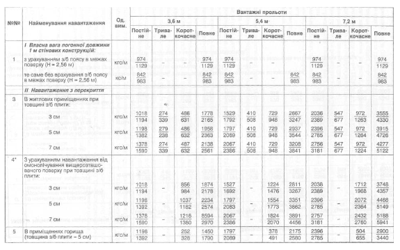

Черненко Артем Євгенійович
Група КН-22
Варіант № 16
Опис завдання: побудувати таблицю навантажень на 1 м стінових конструкцій для трьох вантажних прольотів (3,6 м; 5,4 м; 7,2 м). Кожен проліт поділяється на чотири види навантаження: постійне, тривале, короткочасне та повне. У комірках наведено два значення - нормативне та розрахункове, розділені косою рискою. Знак «-» означає відсутність навантаження.

Рисунок 1 - Таблиця навантажень з файлу завдання (варіант 16)
| №№ | Найменування навантаження | Од. вим. | Вантажні прольоти | |||||||||||
|---|---|---|---|---|---|---|---|---|---|---|---|---|---|---|
| 3,6 м | 5,4 м | 7,2 м | ||||||||||||
| Постійне | Тривале | Короткочасне | Повне | Постійне | Тривале | Короткочасне | Повне | Постійне | Тривале | Короткочасне | Повне | |||
| I. Власна вага погонної довжини 1 м стінових конструкцій: | ||||||||||||||
| 1 | з урахуванням з/б поясу в межах поверху (Н = 2,56 м) | кгс/м | 974/1129 | - | - | 974/1129 | 974/1129 | - | - | 974/1129 | 974/1129 | - | - | 974/1129 |
| те саме без врахування з/б поясу в межах поверху (Н = 2,56 м) | кс/м | 842/983 | - | - | 842/983 | 842/983 | - | - | 842/983 | 842/983 | - | - | 842/983 | |
| II. Навантаження з перекриття | ||||||||||||||
| 3 | В житлових приміщеннях при товщині з/б плити: 3 см / 5 см / 7 см | кгс/м | 1018/1194 | 274/339 | 486/631 | 1778/2165 | 1529/1792 | 410/508 | 729/948 | 2667/3247 | 2036/2389 | 547/677 | 972/1263 | 3555/4330 |
| 1198/1382 | 279/238 | 486/632 | 1958/2363 | 1797/2089 | 410/508 | 729/948 | 2937/3544 | 2396/2785 | 547/677 | 972/1264 | 3915/4726 | |||
| 1378/1590 | 274/339 | 487/632 | 2138/2561 | 2067/2386 | 410/508 | 729/948 | 3208/3841 | 2756/3181 | 547/677 | 972/1224 | 4277/5122 | |||
| 4* | З урахуванням навантаження від омонолічування вищерозташованого поверху при товщині з/б плити: 3 см / 5 см / 7 см | кгс/м | 1018/1194 | - | 856/984 | 1874/2178 | 1527/1692 | - | 1224/1476 | 2811/3267 | 2038/2389 | - | 1712/1968 | 3748/4357 |
| 1198/1392 | - | 1037/1182 | 2234/2574 | 1797/2083 | - | 1554/1773 | 3351/3862 | 2396/2785 | - | 2072/2364 | 4468/5149 | |||
| 1378/1590 | - | 1216/1380 | 2594/2970 | 2067/2386 | - | 1824/2070 | 3891/4456 | 2757/3181 | - | 2432/2760 | 5188/5941 | |||
| 5 | В приміщеннях горища (товщина з/б плити - 5 см) | кгс/м | 1198/1392 | - | 252/328 | 1450/1790 | 1797/2089 | - | 378/491 | 2175/2580 | 2396/2785 | - | 504/655 | 2900/3440 |
| Примітка: у комірках наведено два значення через «/» - нормативне (перше) та розрахункове (друге). «-» - навантаження відсутнє. | ||||||||||||||